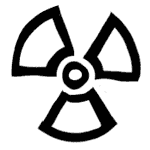
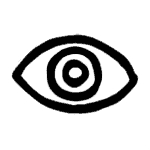
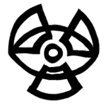

ИСКУССТВО ПРИНИМАТЬ РЕШЕНИЯ
Про котика
Иллюстрация — искусство решений (или ремесло, если угодно). По крайней мере, должна бы быть, на мой взгляд. Решений, не «пятен».
К самому унылому тексту можно найти ход, который войдет с ним в резонанс и заставит звучать. Большая часть рабочего времени должна бы уходить на поиск этого хода — поэтому, собственно, в современной иллюстрации технология отошла на второй план: в наше счастливое время ходу позволяется быть до неприличного простым.

Антон Фёдоров. Полный восторг.
Именно что семь раз отмерь. (Неплохо, кстати, научиться думать на бумаге — правда, тут опасность в том, что задумчивое рисование слишком легко уводит в сторону от задачи). Мозги должны уставать больше, чем пальцы или чем вы там рисуете.
При этом большая часть задач решается внимательным прочтением ТЗ и постановкой по каждому пункту дополнительных вопросов. Так сказать, экстраполяцией в междустрочье. ТЗ надо читать вдоль и поперек, как Тору, и если двойного дна там нет, значит, его надо додумать самому. Если вам достался плоский текст, тем лучше — можете построить на нем все, что захотите. Если журналист идиот, заблистайте интеллектом на его фоне. Будьте лучше, чем ваш заказчик заслуживает.
Отвлекся. Идеальное решение — а оно всегда существует — часто лежит прямо на поверхности и главное там его не проморгать.
У меня был вовсе вопиющий случай. Профессиональной удачей его считать глупо, так что привожу без смущения (тем более, что работа не пошла). Это, правда, история про логотип, но в том, что касается знака, фундаментальной разницы между иллюстрацией и дизайном нет. Вернее, опять же, не должно бы быть. Из классной иллюстрации всегда можно сделать логотип (на этом я еще остановлюсь подробнее). Просто знак требует очищения от всего лишнего, а иллюстрации немного суеты не повредит.
Так вот. Давно это было.
Один добрый знакомый меня попросил нарисовать лого для его конторы. Контора занималась приборами, регистрирующими радиацию. Там, сказал мне этот знакомый, конечно, каким-то образом должен присутствовать знак радиации. И, может быть, глаз — типа на страже. И еще у нас есть вроде как талисман, кошка. Вот может как-нибудь кошку туда.
Кошка так кошка.
Первым делом я нарисовал знак радиации:

Потом я нарисовал глаз:

Потом мне пришло в голову, что кружочки посредине ловко совмещаются. Совместил, выровнял по ширине:

la! — котик.